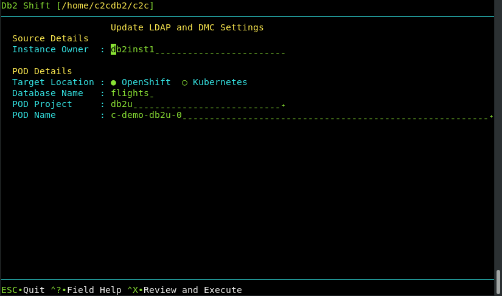

UI - LDAP and DMC Initialization

This Db2 Shift option only applies when the destination is a POD on K8s or OpenShift. If an associated LDAP repository exists, the db2inst1 user is added. If the IBM Data management console is deployed with a Cloud Pak for Data system, it resets the console and applies the relevant DDL and privileges for monitors.
Alert! If you creating a database on Cloud Pak for Data, and your source INSTANCE userid is not db2inst1, you must execute the following SQL commands from a userid that has SECADM authority:
GRANT SECADM ON DATABASE TO db2inst1
GRANT DBADM ON DATABASE TO db2inst1
The db2inst1 userid does not need to exist in the Operating system in order to grant these privileges to the userid. This
requirement does not apply to other Db2 Shift environments. If db2inst1 is not defined as a SECADM and DBADM user in the
database, the Data Management Console feature of CP4D will not be able to access the database nor will it be able to monitor it.
The panel requires the following information:
- Source database owner
- The destination POD and server details
Source or Instance Owner
The Db2 Shift program will double check that the instance owner matches that of the target system when applying the LDAP and DMC settings.
Target Client
The pod client for the security and monitoring update operation must be supplied as part of the Db2 Shift command. Only one of the following clients must be used:
--ocOpenShift Destination--kubectlKubernetes Destination
If the client is Kubernetes (--kubectl) or OpenShift (--oc),
the program requires that the appropriate kubectl or oc client
has been installed locally and that the namespace or project has already been specified.
Destination Database

The destination database must be supplied so that the updates to the security settings and Data Management Console control tables can be properly inserted.
Destination Pod Namespace or Project

In Kubernetes deployments, the location of a pod is associated with a namespace, while in OpenShift deployments, the pod is associated with a project.
When authenticating to a Kubernetes or OpenShift environment, it is recommended that the local client be connected to the project or namespace that the Db2U pod is running in.
If you do not supply a namespace or project value, the Db2 Shift program will assume that you are already connected to that project. If this is not the case, the program will stop with an error when it attempts to find the pod.
To have Db2 Shift connect to the appropriate project or namespace, supply the value of the namespace or project using this option.
Destination Server (POD)
For deployments to OpenShift, Kubernetes, or CP4D, you must supply the name of the POD that Db2U is running in. The OpenShift or Kubernetes client should be used to connect to the target namespace or project before issuing the Db2 Shift command.